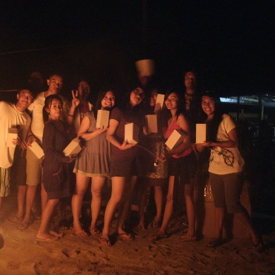
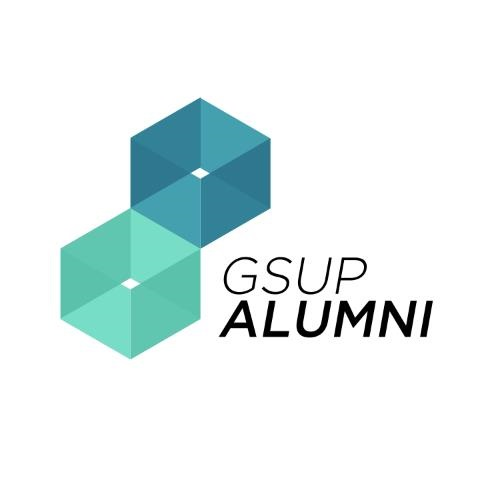

History
The Geographic Society of the University of the Philippines, also known as UP GeogSoc (formerly abbreviated as GSUP), is a college-based, non-profit and non-partisan academic organization. It was founded on 02 February 1963 as The Geographic Society University of the Philippines by Ricardo S. Domingo, Jr. along with 49 other B.S. Geography, B.S. Foreign Service, and A.B. Political Science students at the UP Diliman College of Arts and Sciences under the Department of Geology and Geography. Ricardo S. Domingo, Jr. also served as the organization’s first president. For a time, during the 1990s, the organization was also once known as The Geographical Society of U.P.
UP GeogSoc is composed of individuals who are driven together by the passion of making Geography a better-known discipline in the country and developing the practice of geographic inquiry, particularly in the Philippine context. It is guided by four main principles: academic excellence, camaraderie, service, and advocacy.
Early Era (1963 - 1972)
During the early years of the organization in the 1960s, the UP GeogSoc membership primarily comprised students pursuing A.B. Political Science and B.S. Foreign Service degrees, with Geography majors forming a minority within the organization. UP GeogSoc was initially a social club for Geography majors and enthusiasts during its formative years, but has since evolved to become an academic organization that places emphasis on scholastic performance and camaraderie amongst its members.
UP GeogSoc’s first faculty adviser was Dr. Domingo C. Salita, who was also the first professor of Geography to serve as the chairperson of the UP Department of Geology and Geography, and one of the pioneers of the discipline of Geography in the country. Dr. Telesforo W. Luna, Jr., also one of the pioneers of Geography in the country, also served as one of UP GeogSoc's original advisers. Dr. Luna assumed the role during the second semesters of each academic year from 1964 to 1970, while Dr. Salita fulfilled the advisory position during the first semesters from 1963 to 1972. Dr. Luna’s tenure as adviser stands as the longest in the organization's history, spanning 17 years. Initially serving as adviser from 1964 to 1970, he later resumed the position from 1984 to 1995 while concurrently serving as the chairperson of the UP Department of Geography during those years.
UP GeogSoc's early organizational activities include academic discussions about geographic topics, field trips, social acquaintance parties, and fellowship activities among its members.
Martial Law Period (1972 - 1980)
In 1972, after only 9 years of existence, UP GeogSoc, along with the other student organizations in UP during that time, was forced to suspend its activities due to the declaration of Martial Law and the ban on student organizations. Although faced with the threat and repression brought on by Martial Law at the time, the organization continued to accept members and operated clandestinely as a refuge for Geography majors.
Revival and Relocation to CSSP (1980 - 1995)
UP GeogSoc was revived and its activities resumed in 1980 after 8 years of inactivity under the leadership of Darlene Occeña-Gutierrez, who became the organization’s fifth president from 1980 to 1983. She received guidance and mentorship from Liberty C. Tabigne, the organization's second president and a faculty member of the Geography department at that time. Liberty Tabigne also assumed the role of adviser for UP GeogSoc from 1980 to 1984.
On 26 October 1983, the College of Arts and Sciences was divided into three separate colleges - the College of Arts and Letters (CAL), College of Social Sciences and Philosophy (CSSP), and College of Science (CS). This division, mandated by Administrative Order No. 170 from the UP Board of Regents, resulted in the split of the Department of Geology and Geography, with the Geology section becoming the National Institute of Geological Studies under the College of Science, and the Geography section becoming a distinct department under CSSP. UP GeogSoc continued its programs and expanded its membership under the newly created Department of Geography, and since then has been based in CSSP.
In 1990, a new design for UP GeogSoc’s logo was introduced, replacing the first one which was used since the organization’s foundation. This logo was used from 1990 to 2010.
Upon the creation of the Department Representatives position at the recently formed CSSP Student Council in 1990, it became customary for the UP GeogSoc president to automatically be nominated as the Geography Department Representative. This practice continued until 1999. Theodore SJ. Honorio, the organization's twelfth president, became the first Geography Department Representative, being appointed to the position by the CSSP Student Council with the recommendation of the Geography majors and members of UP GeogSoc. Later, Juanito G. Berja, Jr. made history as the first-ever elected Geography Department representative and third overall to hold the position. He ran as a candidate under the ISA-Buklod CSSP slate and was elected to the position through popular vote in 1992.
Brief Hiatus (1995 - 1997)
UP GeogSoc continued to operate uninterruptedly until 1995 when it experienced a brief hiatus for two years following the graduation of the members of its Executive Committee in that year, and was further exacerbated by a decline in the number of enrolled Geography majors during that period.
Second Revival and Renaissance (1997 - 2010)
In 1997, Jonas Gaffud was elected as the 17th president of the organization. Under his leadership, activities and recruitment of new members for the organization resumed and gained momentum. During this period, the organization temporarily adopted the name "The Geographical Society of U.P.," but reverted back to its original name in 1999. Under Jonas Gaffud's leadership, UP GeogSoc organized various activities, including the notable "Where in the World? Quiz Show." In less than a year, the organization regained its dominant position as the only undergraduate organization in the Department of Geography.
In 2009, UP GeogSoc member Sarah Mariz "Sasa" de Vega made history as the first Vice Chairperson at the CSSP Student Council from the Geography department to be elected to the position, running under BUKLOD CSSP.
Growth and Resurgence (2010 - 2020)
In 2010, under Hanie Sanchez’s presidency, the two flagship events of UP GeogSoc--namely Geog Ride and the Philippine Geography Olympiad (PGO)--were established and held for the first time. UP GeogSoc also introduced a new logo with a simple yet modern design, which has become the official logo used by the organization to this day. UP GeogSoc experienced an increase in membership, interest, and participation from students who were drawn to the new activities and initiatives it offered. Over the next decade, UP GeogSoc regained its position as the predominant student organization within the Department of Geography, with more than half of the Geography majors being affiliated with UP GeogSoc every year.
In February 2012, the Alumni Association of the Geographic Society of the University of the Philippines Inc. (GSUP Alumni Inc.) was formally registered in the Securities and Exchange Commission to establish an association that would maintain connections among the UP GeogSoc Alumni Members. The following December, GSUP Alumni Inc. was recognized as an Organization-Based Chapter of the University of the Philippines Alumni Association (UPAA).
In 2015, GSUPERSPECTIVE: The Forum Series (currently branded as PERSPECTIVE: The Geography Forum Series) was established to expand horizons of geographic thinking and perspective in society’s most critical and most talked-about issues.
In February 2018, UP GeogSoc officially became a student branch of the International Association of Young Geographers (IAYG) and became the first and only student branch of IAYG in the Philippines. It is also the largest student branch of IAYG in Southeast Asia.
In March 2018, Roi Anton Boribor, a member of the Academics and Research Committee, achieved the distinction of being only the second person to graduate as summa cum laude from the B.S. Geography program at UP Diliman.
On March 9, 2020, just after the conclusion of the 10th Philippine Geography Olympiad, the organization's on-ground activities were suspended due to the nationwide state of public health emergency declared in response to the COVID-19 pandemic.
UP GeogSoc Era (2020 - Present)
In May 2020, during Jacob Jacela's presidency, UP GeogSoc amended its constitution to modernize its organizational structure, internal processes, and membership rules. The amendment aimed to facilitate innovation and accommodate new ideas within the organization. The constitutional amendment has also codified “UP GeogSoc” as the official abbreviation of the organization, replacing the abbreviation “GSUP” while still recognizing its historic significance and sentimental value. This change was discussed and decided by the resident members of the organization during a General Assembly held in the Academic Year 2019-2020, with the intention of enhancing the organization's visibility beyond CSSP and attracting members from outside the Department of Geography.
In October 2020, upon the formation of a new executive committee headed by the organization’s 41st president, Jael Gonzales, UP GeogSoc made headlines, gained national prominence, and was featured in several news media outlets when its open letter to DENR undersecretary Benny Antiporda regarding his comments made against the UP Marine Science Institute went viral on social media.
Despite the challenges posed by the COVID-19 pandemic and the transition to virtual learning, UP GeogSoc successfully adapted its activities to an online format. While the Geog Ride was an exception due to its nature as an outdoor event, the organization was able to hold its events such as ACLEs (Alternative Classroom Learning Experience) and PERSPECTIVE: The Geography Forum Series in a fully virtual and online format. Notably, UP GeogSoc managed to conduct all planned events without any cancellations during the height of the pandemic. Additionally, the 11th and 12th editions of the Philippine Geography Olympiad, held in 2022 and 2023 respectively, were also successfully organized in an online and virtual setup.
In July 2022, Arvin Jake Adovo, former Vice President for Academics and Research, made history by becoming the third summa cum laude B.S. Geography graduate.
In February 2023, UP GeogSoc celebrated its 60th anniversary with a month-long series of events and activities. On 2 February 2023, the organization commemorated 60 years of its existence through a short video posted on its social media accounts. On 11 February 2023, UP GeogSoc held a homecoming party for its resident members and alumni. It was the organization’s first major face-to-face event since the pandemic.
On 27 February 2023, the Geographic Society of the University of the Philippines launched its new flagship event entitled, “MAPAaralan: Geography for Kids” which aims to teach children basic geographical concepts in a very fun and comprehensible way appropriate for their age. On its launch, UP GeogSoc partnered with Kalinga Day Care Center. The program was filled with different activities about landform modeling, making simple maps, and activities teaching basic spatial concepts which would be useful to the children as they continue to explore their environment. MAPAaralan: Geography for Kids was one of the first major face-to-face events spearheaded by the organization after three years of conducting activities and programs online because of the pandemic. On 25 April 2023, UP GeogSoc held its first face-to-face ACLE entitled “Para! Para Kanino ang Kalsada? The Mobilities of Pedestrians, Cyclists, and PWD.” It attracted a large attendance of over 90 participants, one of the largest number of participants for an ACLE.
Logo
The color green represents the land, while the color sky blue represents both the sea and people who live in between. As a whole, the logo represents the Society's aim to promote Geography as a holistic discipline. From ridge to reef, land and sea, the white line represents the far-reaching scope of the discipline of Geography.
-

February 2, 1963
UP GeogSoc Founded
Ricardo S. Domingo, Jr. founded The Geographic Society U.P. at the UP Diliman College of Arts and Sciences under the Department of Geology and Geography.
-

First Logo
(1963 - 1990)
-

1964
Pioneers of UP GeogSoc
Early members of the organization with Ricardo S. Domingo, Jr.
-

1972 - 1980
Martial Law
President Ferdinand Marcos signed Presidential Proclamation № 1081, placing the entire Philippines under Martial Law, as well as banning all student organizations in the country. UP GeogSoc activities were suspended.
-

1980
Revival
UP GeogSoc was revived and activities resumed under the leadership of Darlene Occeña-Gutierrez.
-

26 October, 1983
Transfer to CSSP
UP GeogSoc relocated to CSSP after the College of Arts and Sciences was split into three separate colleges.
-

Second Logo
(1990 - 2010)
-

1997
Second Revival
After a 2 year hiatus, UP GeogSoc was once again revived under the leadership of Jonas Gaffud.
-

Third Logo
(2010 - Present)
-

September 9-10, 2010
Geog Ride
The 1st edition of Geog Ride was held in Punto Miguel Laiya, Batangas.
-

December 4, 2010
1st Philippine Geography Olympiad
The first ever Philippine Geography Olympiad was held at PH 400. PGO, along with Geog Ride, are UP GeogSoc's two original flagship events.
-

2012
GSUPAA
Alumni Association of the Geographic Society of the University of the Philippines Inc. (GSUP Alumni Inc.) was formed.
-

2018
IAYG Student Branch
UP GeogSoc became a member of the International Association of Young Geographers.
-

February 2, 2023
60th Anniversary
UP GeogSoc celebrated 60 years of Academic Excellence, Camaraderie, Service, and Advocacy.
-

February 27, 2023
MAPAaralan: Geography for Kids
UP GeogSoc launched its new flagship event "MAPAaralan: Geography for Kids” which aims to teach children basic geographical concepts in a very fun and comprehensible way appropriate for their age.